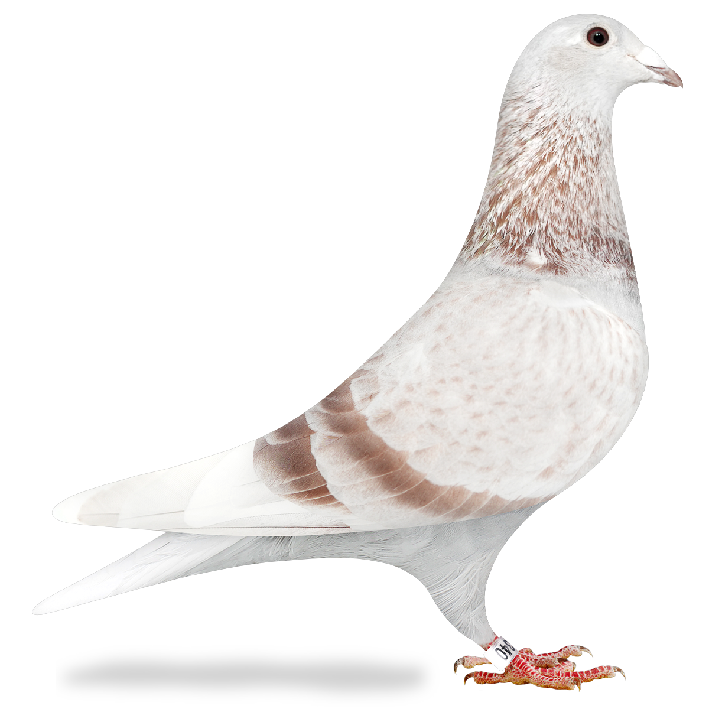
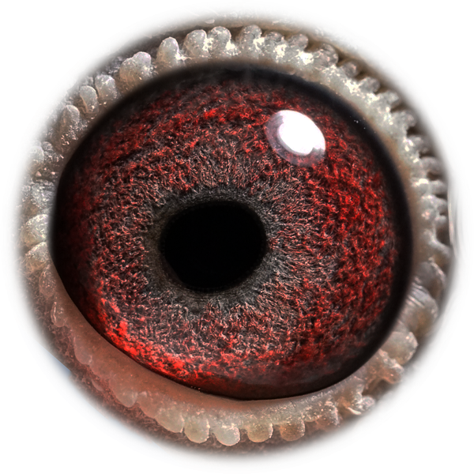
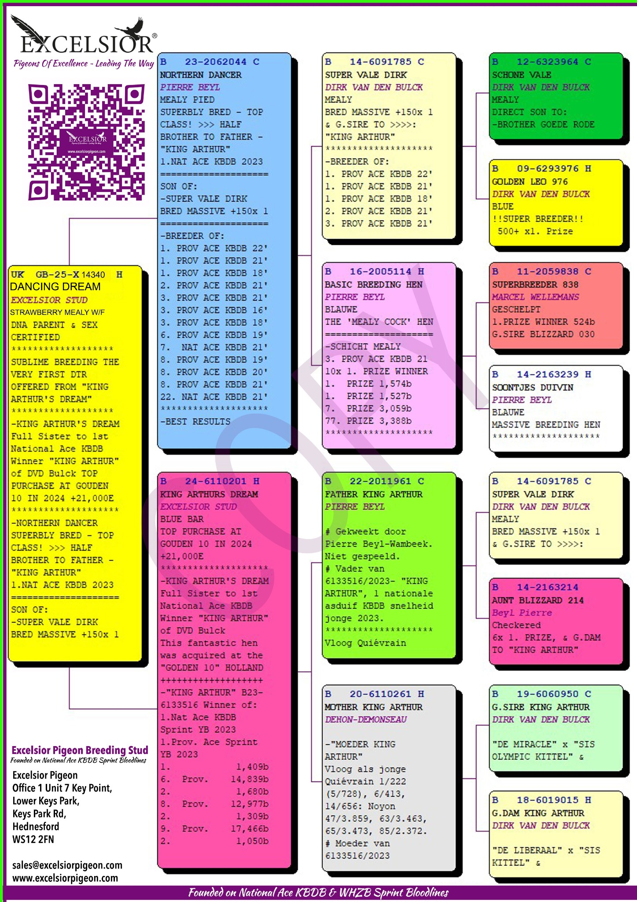

Kweekprofiel
GB25-X14340 · Excelsior Stud

King Arthur / Van den Bulck
GB25-X14340
Dancing Dream is een rechtstreeks aangekochte kweekduivin uit Excelsior Stud.
Beschikbaar beeldmateriaal van Dancing Dream.

Eén duidelijke stamboom per duif, zodat de pagina rustig en professioneel blijft.
